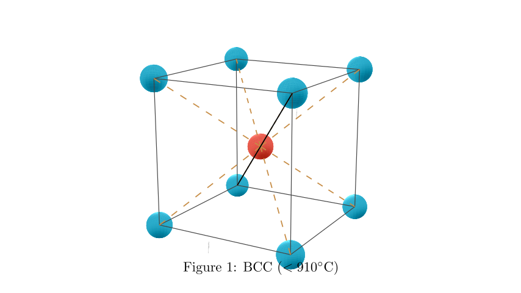
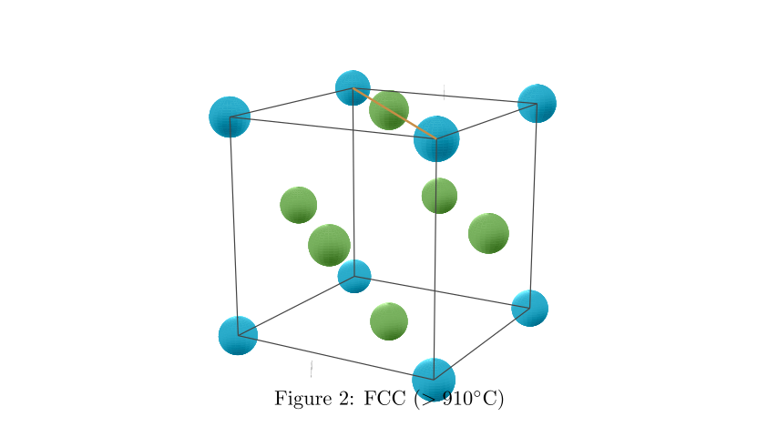
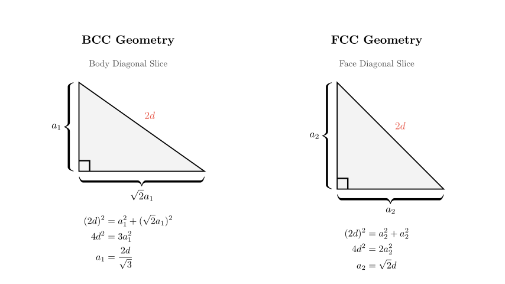
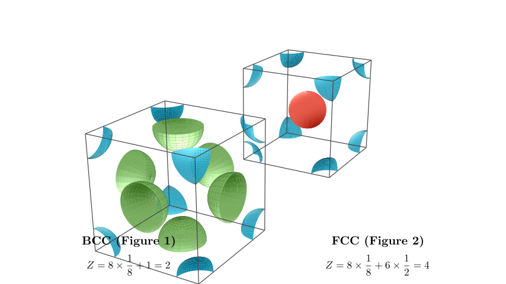

Problem Statement: The basic structural unit of pure iron crystal below 910°C is shown in Figure 1, and above 910°C, it transforms into the structural unit shown in Figure 2. The distance between the nearest iron atoms is the same in both crystals.
(1) In the pure iron crystal below 910°C, the number of iron atoms equidistant and closest to a given iron atom is $\underline{\hspace{3em}}$. In the pure iron crystal above 910°C, the number of iron atoms equidistant and closest to a given iron atom is $\underline{\hspace{3em}}$. (2) The ratio of the edge lengths of the basic structural units before and after the crystal transformation (ratio of below 910°C to above 910°C) is $\underline{\hspace{3em}}$. (3) The ratio of the densities before and after the transformation temperature (ratio of below 910°C to above 910°C) is $\underline{\hspace{3em}}$.
Solution Approach: This problem requires understanding crystal lattice structures, specifically Body-Centered Cubic (BCC) and Face-Centered Cubic (FCC) lattices. We will: 1. Identify the coordination numbers (nearest neighbors) for both structures visually. 2. Use geometry to relate the unit cell edge length ($a$) to the nearest neighbor distance ($d$) for both cases. 3. Calculate the ratio of edge lengths. 4. Determine the number of atoms per unit cell ($Z$) and calculate the density ratio using the volume and atomic count.

Part 1: Coordination Numbers
Below 910°C (Figure 1): The structure shown in Figure 1 is a Body-Centered Cubic (BCC) lattice. - Looking at the diagram, the iron atom in the center is surrounded by 8 atoms located at the corners of the cube. - All these 8 corner atoms are equidistant from the center. - Therefore, the coordination number (number of nearest neighbors) is 8.
Above 910°C (Figure 2): The structure in Figure 2 is a Face-Centered Cubic (FCC) lattice. - In this structure, atoms are located at the corners and the centers of the faces. - The nearest neighbors to a corner atom are the face-centered atoms. - Let's visualize the FCC structure to count these neighbors accurately.

Coordination Number for FCC: In the Face-Centered Cubic structure: - Select any atom (for example, a face-centered atom). It touches the 4 corner atoms of its own face. - It also touches 8 other face-centered atoms in the adjacent unit cells (or adjacent faces). - Total nearest neighbors = 4 + 8 = 12.
Part 2: Edge Length Ratio
We are given that the nearest neighbor distance ($d$) is the same in both crystals. We need to express the edge length ($a$) in terms of $d$ for both structures.
For BCC (Figure 1): - The atoms touch along the body diagonal of the cube. - The length of the body diagonal is $a_1\sqrt{3}$. - This diagonal contains two nearest neighbor distances (center to corner). - Equation: $2d = a_1\sqrt{3} \implies a_1 = \frac{2d}{\sqrt{3}}$.
For FCC (Figure 2): - The atoms touch along the face diagonal of the cube. - The length of the face diagonal is $a_2\sqrt{2}$. - This diagonal contains two nearest neighbor distances (corner to face-center). - Equation: $2d = a_2\sqrt{2} \implies a_2 = \frac{2d}{\sqrt{2}} = d\sqrt{2}$.

Calculation of Edge Ratio: We need the ratio $a_1 : a_2$ (Below 910°C : Above 910°C).
$$ \frac{a_1}{a_2} = \frac{\frac{2d}{\sqrt{3}}}{d\sqrt{2}} $$
Simplifying: $$ \frac{a_1}{a_2} = \frac{2}{\sqrt{3} \cdot \sqrt{2}} = \frac{2}{\sqrt{6}} $$
To rationalize the denominator or express simply: $$ \frac{2}{\sqrt{6}} = \frac{2\sqrt{6}}{6} = \frac{\sqrt{6}}{3} $$
So, the ratio is $\sqrt{6} : 3$ (or equivalently $2 : \sqrt{6}$).
Part 3: Density Ratio
Density ($\rho$) is defined as Mass ($m$) divided by Volume ($V$). $$ \rho = \frac{Z \cdot M}{N_A \cdot V} $$ Where: - $Z$ is the number of atoms per unit cell. - $M$ is the molar mass (constant for pure iron). - $N_A$ is Avogadro's constant. - $V$ is the volume of the unit cell ($a^3$).
Since $M$ and $N_A$ are constant, the ratio of densities depends only on $Z$ and $V$: $$ \frac{\rho_1}{\rho_2} = \frac{Z_1 / V_1}{Z_2 / V_2} = \frac{Z_1}{Z_2} \times \frac{V_2}{V_1} $$

Final Calculation:
FCC ($Z_2$): $8 \text{ corners} \times \frac{1}{8} + 6 \text{ faces} \times \frac{1}{2} = 4$ atoms.
Determine Volumes ($V = a^3$):
$V_2 = a_2^3 = (d\sqrt{2})^3 = 2\sqrt{2}d^3$
Calculate Ratio: $$ \frac{\rho_1}{\rho_2} = \frac{2}{4} \times \frac{2\sqrt{2}d^3}{\frac{8d^3}{3\sqrt{3}}} $$
Simplify the fraction: $$ \frac{\rho_1}{\rho_2} = \frac{1}{2} \times \frac{2\sqrt{2} \cdot 3\sqrt{3}}{8} $$ $$ \frac{\rho_1}{\rho_2} = \frac{1}{2} \times \frac{6\sqrt{6}}{8} $$ $$ \frac{\rho_1}{\rho_2} = \frac{3\sqrt{6}}{8} $$
Final Answers: (1) 8; 12 (2) $\sqrt{6} : 3$ (or $2 : \sqrt{6}$) (3) $3\sqrt{6} : 8$